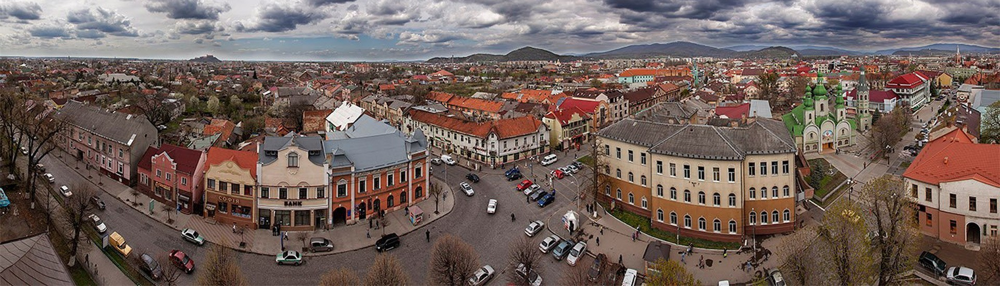
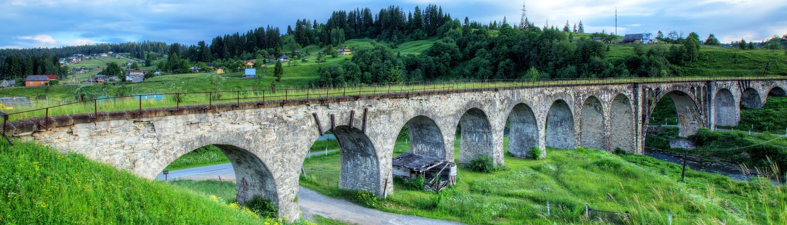
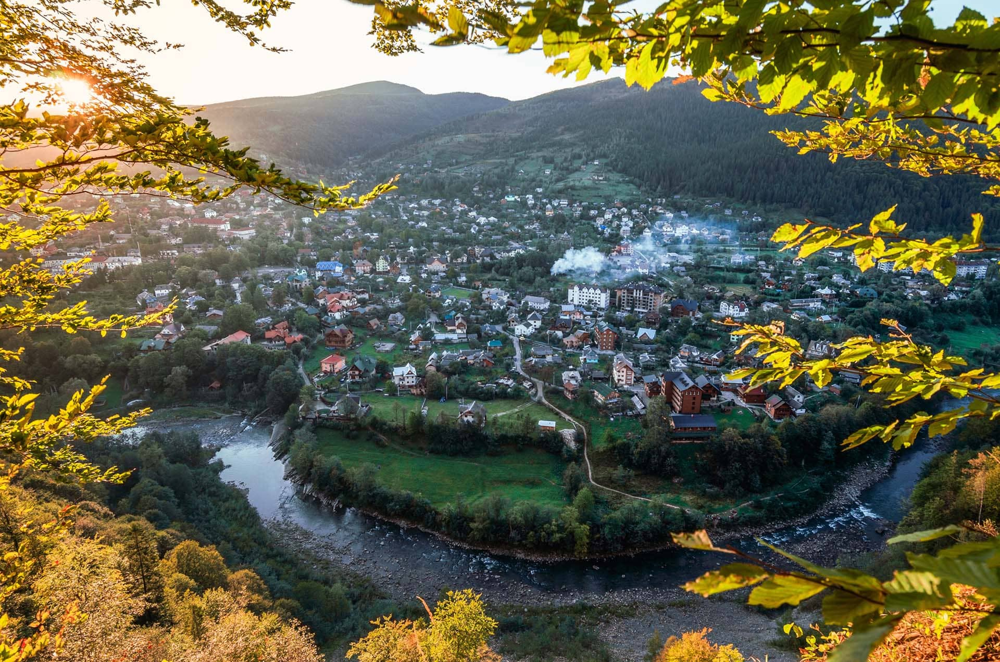
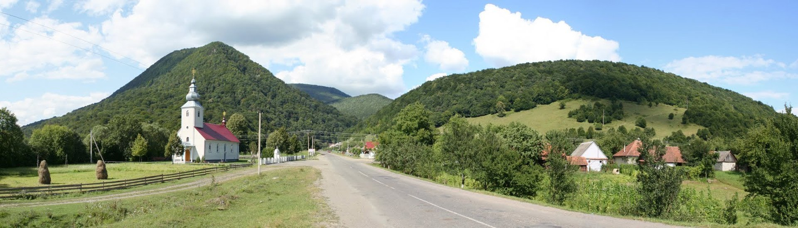
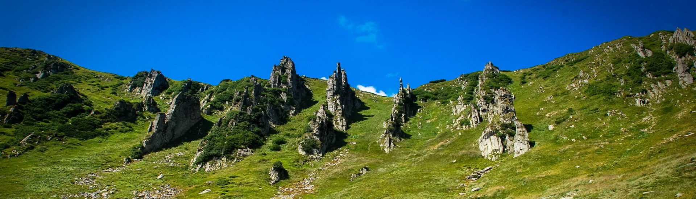
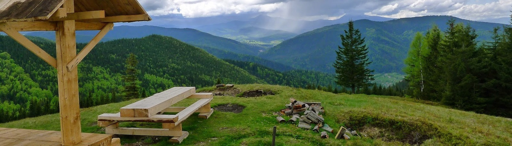

Затишні вулиці Мукачева взимку перетворюються на епіцентр свята — тут проходить фестиваль вина. Проте головна атракція міста — велична фортеця “Паланок”.
Сучасне Мукачево — охайне, затишне місто на берегах ріки Латориці. Воно розташоване на рівному плато, і лише замкова гора велично здіймається над старовинними вулицями. Замок “Паланок” можна побачити з будь-якої точки, з фортецею пов’язана і назва міста, і його доля. Подейкують, ніби будівля замку коштувала робітникам великих мук — від того й містечко назване Мукачевим. Інша версія стверджує, що люди з великими муками долали карпатські перевали, щоб дістатись селища. Але існує ще третя, суто прозаїчна версія, позбавлена жодних мук: колись на Латориці стояв млин, на якому мололи борошно — муку.
Мукачево приваблює туристів своєю винятковою історичною спадщиною, але пам’ятки старовини — не єдине, заради чого приїжджають до міста чисельні гості. Сюди їдуть гурмани та поціновувачі доброго вина. До речі, забронювати житло — готель, апартаменти, квартиру, чи приватну садибу можливо за допомогою нашого сервісу. Побувати у Мукачевому і не відвідати замок “Паланок” — все одно, що гуляти Парижем і не побачити Ейфелевої вежі. Але грізну фортецю краще залишити “на десерт”, а своє знайомство зі старовинним містечком почати з його центру.
На головній площі міста, біля Ратуші, яка й досі виконує функцію міської ради, щороку проходить фестиваль “Червене вино”. Закарпаття — виноробний регіон. Це вам підтвердить будь-який житель міста Берегове, яке вважається місцевою столицею вина. У Береговому розташоване знане виробництво. Мукачівський фестиваль збирає не тільки визначні фірми, але й приватних виробників, тому тут можна спробувати рідкісні напої. Гості можуть покуштувати віно біле та червоне, солодке та сухе, холодне та гаряче. Не обходиться і без традиційних глінтвейнів з медом та корицею. Навіть найвибагливіший гурман буде здивований місцевим розмаїттям напоїв — як і пляшок та бочок, в яких вони подаються. Для туристів це шанс за вигідною ціною придбати чудовий сувенір: коштовне вино, яке не побачиш в жодній крамниці. Кожного року фестиваль збирає все більше і більше гостей з України та закордону. Дегустація напоїв і конкурси поєднуються з гучними святкуваннями: вас чекає справжнє народне свято з колядками та вертепами. Ви, мабуть, дуже хочете почути, коли треба їхати до Мукачева, щоб потрапити на це виноробне свято? Що ж, занотовуйте: “Червене вино” проходить в січні, напередодні так званого Старого Нового року, тобто вам треба потрапити до Мукачева не пізніше 12-13 січня. Тепер розумієте, чому гостям пропонують не лише холодне, але й гаряче вино? Закарпатські зими геть не лагідні, але червене вино допоможе вам зігрітись!
Ворохта контрастна: поряд з типовими гуцульськими забудовами, сторічними віадуками та виключно дерев’яними церквами співіснують супутникові тарілки, а NN разів на день новим залізничним мостом гуркотять потяги. Хоча… вони теж якоюсь мірою раритетні.
Назва селища, ймовірно, походить від імені розумного чолов’яги, який був за слугу у перших місцевих жителів: Ворохти. Той, подейкують, був людиною мудрою. Йдучи до нього за порадою з сусідніх селищ, люди казали: «Йду до Ворохти».Чим далі в гори, тим більш затишними стають села. Туристів у Ворохті вистачає – це ще не карпатська глушінь. Але різницю між Яремче та Ворохтою помітити просто: довкола тихіше, схили більш урвисті, течія Пруту стає стрімкішою. До речі, селище розташоване на висоті 850 метрів над рівнем моря: уявіть тільки, яке тут чисте повітря! Кришталеве!Що раніше було карпатською нормою, нині – раритет: побачити справжню дерев’яну церкву у Карпатах, не попсовану варіативним оздобленням – бляхою чи сайдингом – велика вдача. Церква Різдва Богородиці – прекрасний виняток серед сучасних, часом недолугих, втручань в архітектурні карпатські звичаї.
Привезена сюди з Яблуниці у 1780 році і ще бозна-коли побудована — кажуть, що в році 1615-у вона вже стояла. Точно відомо одне: стіни церкви, похилені всередину – ознака давнини. Чотиризрубна, хрестова в плані церква стоїть на самісінькій маківці пагорбу у північній частині селища, звідкіль видно всю Ворохту й околишні гори.Василь Янюк, що заснував селище в середині XVI сторіччя, мав трьох доньок: Марію, Анну та Євдокію. Першу віддав заміж за Ворохту, другу – за Дедерчука, а третю – за Воронюка (с. Вороненка за його ім’ям, до речі, назване). До Вороненківської церкви жителям Ворохти ходити було далеко – майже 8 км, тож вирішили звести власну Богослужебну каплицю, пізніше за невідомих обставин зруйновану.За часів Австро-Угорщини каплицю відновили, проте в зменшеному вигляді. А у 1940 році через пропаганду атеїзму пам’ятку знищили знову — церкву Різдва Богородиці перетворили стайню.
Зручно, коли можна жити в одному містечку і мати змогу об’їздити з десяток наближених до нього. Якщо хочете встигнути побачити все за тиждень відпустки, Яремче – ідеальна локація: всі основні шляхи транспортного сполучення з’єднані тут, а на дорогу у будь-яку точку Карпат знадобиться не більше 4 годин. Та що там наближені містечка, – і в самому Яремче можна знайти чимало цікавого: дивовижні природні формації – водоспади, круті скелі, віковічні ліси, відкриті пішохідні маршрути будь-якої складності, гуцульська культура – постійно діючий ярмарок, виставки народних промислів та ремесел, колоритні гуцульські фестивалі, традиційна кухня майже у кожному закладі!
У Яремче приємно помічати дрібниці: різьбу на старих хатах, дивну, як на туриста, говірку, насичений запах бринзи, дрібний хрестик на ярмарковому вишитому рушнику, людей у національному вбранні, яке на тутешньому люді виглядає настільки органічно, що ряджені у вишиванки дівчата на звітному концерті самодіяльних колективів будуть впадати у вічі, бо тепер ви знатимете різницю між тим, що таке «носити» і «вдівати» вишиванку. Яремче – місто, в плані туристичної інфраструктури розвинуте чи не найбільше за інші в Карпатах: окрім приватних садиб та сімейних готелів, є в Яремче готелі й три-, чотиризіркові. Місто відоме як здравниця: санаторії м. Яремче в більшості своїй мають загальнооздоровчий профіль, у лікуванні та профілактиці захворювань використовують природньо-кліматичні умови альпійського клімату та мінеральні води.
Незважаючи на активний розвиток туризму, в Яремче вдалось зберегти автентику: тут одягають вишиванки не для того, щоб розважити приїжджих, а тому, що це традиційний елемент одягу, так само як кептарик чи крайка; тут містом їздять на конях не заради наживи заробити на кінних прогулянках, а бо кінь для гуцула – засіб пересування.Яремче – визнаний екокурорт, одне тільки перебування в якому має помітні лікувальні властивості: за рахунок чистого повітря та альпійського клімату тут можна оздоровити організм – від очищення легень та нормалізації тиску до покращення роботи серцево-судинної системи та шлунково-кишкового тракту.Чому варто приїхати сюди і на що подивитись? Наприклад, на славнозвісний яремчанський ярмарок, чи стрімкі води Прута, що гуркотять у водоспаді Пробій, або на вольєрне господарство, де єдине, що розділяє дикий тваринний світ від людського — металева сітка паркану.
З гори Високий Камінь відкривається запаморочливий краєвид на долину Латориці. Околиці Високого Каменю — державний заказник, де можна побачити унікальні дерева та квіти.Високий Камінь здіймається в місці злиття річок Латориця та Жденівка. Порівняно з іншими карпатськими вершинами, це невисока гора — лише 836 м над рівнем моря. Щоб було легше уявити “скромність” Високого Каменю: розташована неподалік гора Пікуй може похвалитись чесними 1 408 метрами. Але Високий Камінь — більше, ніж просто скеля, на вершечок якої можна піднятися, щоб помилуватись запаморочливими карпатськими краєвидами. Гору та її околиці визнаною пам’яткою природи державного значення. Прогулянка цією місцевістю дозволить охопити і зрозуміти все розмаїття природи Закарпаття.
Гора височіє над селами Підполоззя та Жденієво. Загальна відстань з населених пунктів, яку треба подолати, щоб дістатись вершини: 6 км. Протягом прогулянки можна побачити зарості дубу скельного, букові ліси, світлі галявини. У заказнику ростуть підсніжники та лісові лілії, тут можна побачити рябчиків й інших лісових птахів. У самісінькій лісовій гущавині випростовуються кілька скель — на них варто піднятись, щоб роздивитись навколишні гори й долини. Одна з таких скель колись мала стратегічне значення — з неї видно села і всю долину Латориці, тому її використовували як військовий пункт спостереження.
Найзручніше починати підйом вгору зі Жденієво, прямуючи через сусіднє Підполоззя. На таку прогулянку вистачить двох годин, її легко можуть здійснити не тільки досвідчені пішохідні туристи, але й гості, що приїхали до Карпат заради спокійного сімейного відпочинку. Перепад висот також незначний — лише 374 м. Крутою стежка стає після Підполоззя, коли шлях забирає різко вгору — крізь скельні дуби, що ростуть на стрімких схилах.Якщо ви цікавитесь старовинною архітектурою, то маєте нагоду оглянути каплицю Марії Магдалини у Підполоззі — це невеличка сакральна будова, зведена у XIX ст. Високий Камінь розташований на території Бойківщини — етнографічного району Закарпаття. Бойки, гуцули, лемки істотно відрізняються один від одного звичаями, побутом і культурою. Тож дорогою до вершини ви можете побачити унікальні зразки бойківського мистецтва.
Назва “Шпиці” добре описує настрій цієї гори. Природні кам’яні насипи подібні до велетенських веж. Розташовані на висоті більше 1800 метрів, вони вражають глядача масштабом, утворюючи цілі кам’яні коридори. Кожна брила — до 40 метрів заввишки.Дорогою до Шпиць все зелене, вкрите трав’яними і кущовими альпійськими луками. Багато чорниці, якою можна добряче об’їстися в сезон (ягідний сезон для Карпат починається в липні і триває майже до осені).З вершини відкривається чудовий краєвид на Чорногірський хребет, ліворуч видно Бребенескул, Дземброню, Вухатий Камінь, праворуч — Туркул, Говерлу, Петрос. А ще — струмки, що стікають із високих гір донизу, так звані Гаджинські водоспади.
Хоча гора й розташована поруч із популярними маршрутами по Чорногорі, та вершина Шпиць лежить не біля хребтової стежини, тож туристів на ній не так багато. А от пастухів, які виходять на все літо в гори із вівцями чи конями, тут можна зустріти часто.На Шпицях у хорошу погоду зазвичай тихо та спокійно. Проте як тільки на Чорногорі з’явиться натяк на вітер та дощові хмари, тут вже буде ледь не гроза: погода на Шпицях зазвичай гірша, ніж деінде поруч. Кам’яні скелі ніби притягують дощ. Але туман й хмари тільки додають цьому місцю своєрідного шарму та загадковості.За легендами, тут похований Олекса Довбуш — місцевий герой та ватажок руху опришків. Зізнатись, гуцули завжди «ховають» Довбуша біля великих каменів (справжнього ж місця не знає ніхто). Здогадок про те, де знайшов спокій карпатський Робін Гуд — багато, але версія про Чорногору — найімовірніша, бо саме на Чорній горі Довбуш заповідав його поховати.Сміливці неодмінно зажадають порцію адреналіну і вилізуть на велетенські скелі, проте треба бути вкрай обережним, бо кам’яні насипи гострі, наче ножі, і знаходяться на шаленій висоті. Краще знайдіть вдалий ракурс і зробіть влучне фото з безпечного місця. Все ж хочеться видертись нагору? Приїздіть у складі альп-групи чи разом зі скелелазами — на Шпицях інколи проводять тренування і ті, й інші. Сюди, щоправда, значно важче нести спорядження, ніж на популярні для лазіння Скелі Довбуша, тому раптово застати групу на скелях — велика вдача.
Похід на гору Ягідну — ідеальний варіант для легкої прогулянки Карпатами. Дорога переважно лісова і майже не має складних різких підйомів. Є можливість спуску як до точки старту — до с. Микуличин, так і до Татарова. Загальна маршрутна дистанція при цьому незмінна — близько 15 км.Велика перевага Ягідної — придатність для походу будь-якої пори року. При бажанні, маршрут можна подовжити, заночувавши на полонині Ліснів, чи рушити далі Ліснівським хребтом на гору Чорний Погар (1 266 м) і дійти до Ворохти або спуститись аж у Кривопіллі.На Ягідну можна: йти пішки, їхати велосипедом, до підйому на хребет дістатись квадроциклом чи снігоходом.На замітку: З Ягідної відкривається прекрасний панорамний краєвид на Чорногірський хребет — в ясну безхмарну погоду добре видно Петрос (2 020 м) та Говерлу (2 061 м). На південному заході — гори Ґорґани. Вершина Хом’як (1 542 м) — як на долоні!
На полонині Ліснів, в кілометрі від вершини г. Ягідної, є колиба, придатна для ночівлі у холодні пори року. Колиба може вмістити 3-4 туристів — є дві лежанки, розраховані на двох людей кожна. На початок зими 2015 року шпарин поміж зрубом не було — простір заповнений монтажною піною та дрантям. На жаль, скла у вікнах також не було — отвори закриті поліетиленом.Є велика піч-грубка у доброму стані (приміщення не задимлює). Уздовж стін стоять стіл та лавиці. Дах не протікає.На Ягідну можна: йти пішки, їхати велосипедом, до підйому на хребет дістатись квадроциклом чи снігоходом. На замітку: З Ягідної відкривається прекрасний панорамний краєвид на Чорногірський хребет — в ясну безхмарну погоду добре видно Петрос (2 020 м) та Говерлу (2 061 м). На південному заході — гори Ґорґани. Вершина Хом’як (1 542 м) — як на долоні!
Корисні поради тим, хто збирається на курорт
Курорт — лікувальна місцевість, тому бажано весь вільний час знаходитися на відкритому повітрі. Здоров'я відновлюється не тільки завдяки кабінетним процедурам, а й у результаті дії сил природи. Сонячні промені, насичене фітонцидами й аероіонами чисте цілюще повітря, посильні фізичні навантаження, милування прекрасними краєвидами (ландшафтоестетопсихотерапія), спростереження за птахами, дикими тваринами — все це справляє на різні системи організму благотворний вплив, відволікає від нав'язливих думок про хворобу, про щоденні життєві турботи. Людина заспокоюється, а це підвищує опір організму різним хвороботворним факторам.